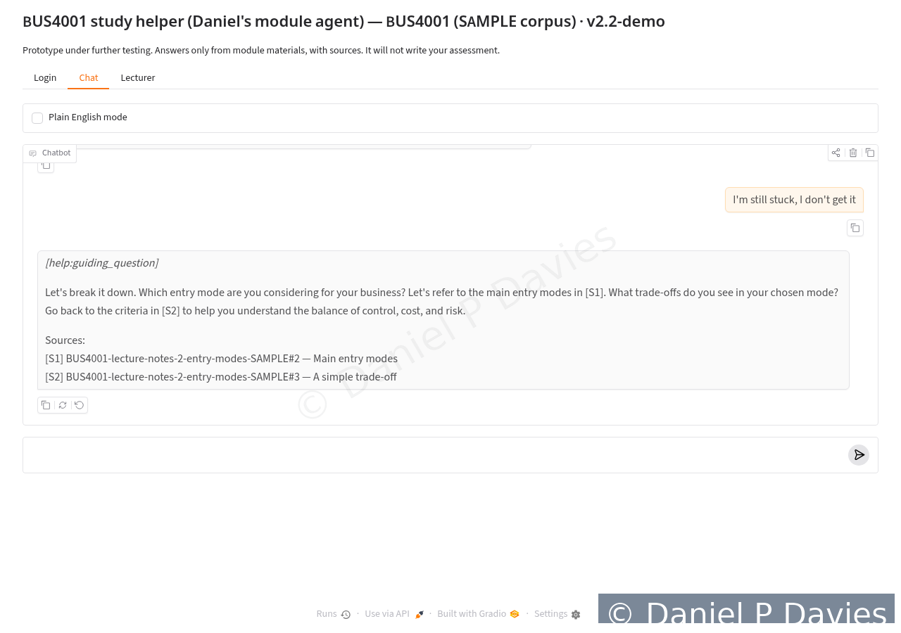
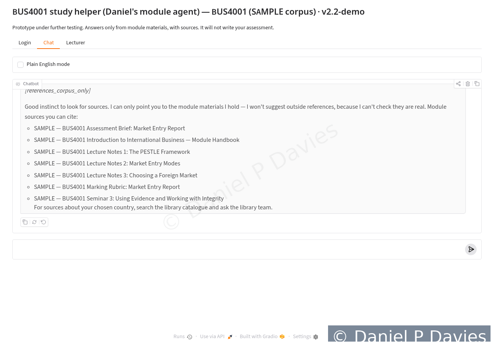
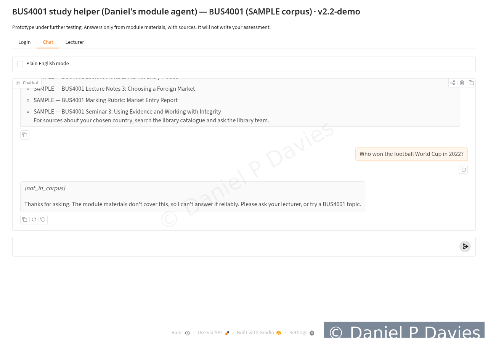

Innovation showcase
A module-specific feedback agent, built for my doctoral research: what it does, the principles behind it and the guardrails it works within.
What it is
As part of my PhD I have designed and built a prototype of a lecturer-fed, module-specific feedback agent. It uses retrieval-augmented generation (RAG): before it answers, it retrieves from materials the lecturer has chosen for the module, such as the syllabus, lecture notes, rubrics, criteria and exemplars. It is meant to be there when students study, including late at night, for content questions, clarifying a brief, feedback on a draft and practice.
The problem it addresses is a mismatch rather than a shortage of tools. Students already use generic AI, but its answers are often unaligned with the module’s outcomes and criteria. A tool grounded in the lecturer’s own materials, which coaches rather than writes, is my answer to that gap.
Design principles
- Grounded in the module. It answers only from the materials it has been given and cites the section each answer draws on. When a question falls outside those materials, it says so.
- Hints before answers. Help is graduated and tracked for each topic: a hint, then a guiding question, then a worked partial example on a different case, then a pointer to the marking criteria. A student who says they have understood resets that topic.
- The standard stays visible. It sends students back to the brief and the rubric, so they practise judging their work against the criteria rather than handing that judgement over.
- Language support without a lower standard. A plain-English mode helps students working in an additional language without changing what the task asks of them.
- The lecturer stays in charge. The lecturer chooses the materials and can set a tone (warmth, directness, formality). Tone changes style only and cannot override the rules.
- Privacy by design. Research records use pseudonymous IDs held apart from login details, the lecturer’s view shows aggregate use only, and the student-facing version runs locally on freely available language models. Offline testing against a paid API model (OpenAI) is planned, using synthetic drafts only and no student data.
Guardrails
- Layered checks decline requests to write assessed work, including paraphrased and role-play requests.
- It will not suggest references that are not in the module materials, because it cannot check that they are real.
- Out-of-scope questions are flagged rather than answered from general knowledge.
- Only sample module materials prepared for testing have been used so far. No student data have been collected.
- Ethical approval, and permission from the institution concerned, will be in place before any use with students.
Screens from the prototype
Screenshots from version 2.2-demo, using sample module materials only. Each image carries a visible copyright watermark.








Status and next steps
- Version 2, October 2026. A set of 43 scripted tests (28 conversation tests and 15 unit tests) passes on the sample materials.
- Further testing is under way before any classroom use. Next steps include faster responses (answers currently take about 8 to 14 seconds on an ordinary processor), more robust checks against unusual phrasing, and the password reset, rate limiting and secure connection that a live service needs.
- The agent is the design artefact for my doctoral action research, which will evaluate it with Level 4 international business students across plan–act–observe–reflect cycles. See Research.
The prototype is not open source and its code is not public.